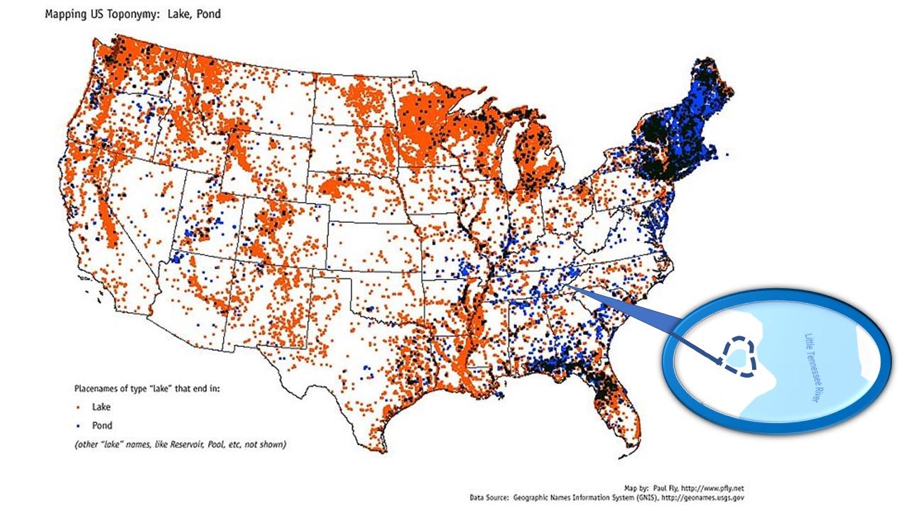
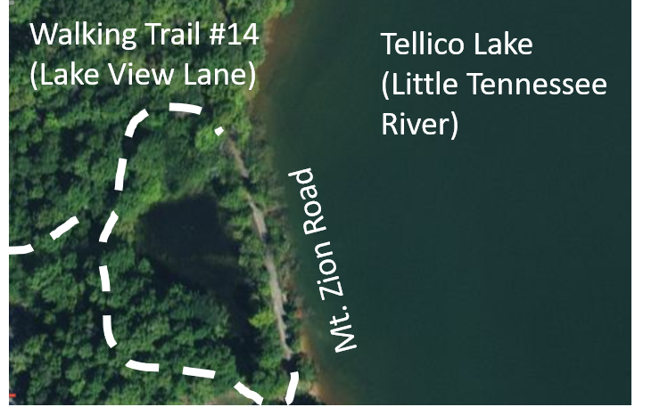
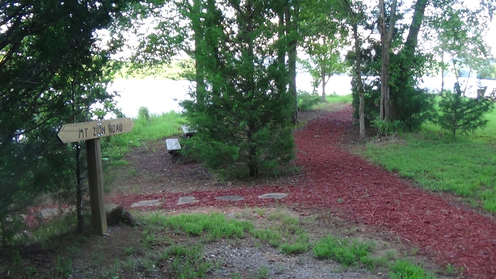
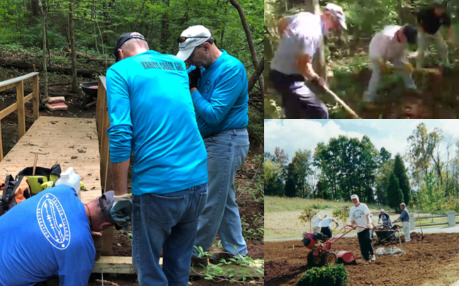

Saving The Pond
Wed, Aug 28, 2019
There are several million ponds in United States (Renwick et al, 2006), and many are in need for preservation. This pond (35°33'51.7"N 84°13'38.5"W), part of Kahite hiking trail system in East Tennessee, attracts a variety of wildlife, with ecological benefits and habitat. It preserves community open space and property values.
The pond began to deteriorate as invasive submerged plants such as Hydrilla (notoriously difficult to eradicate without serious chemical herbicides) started growing under the surface of the water causing problems for aquatic life. The pond used to be naturally cleaned by a stream connecting to Tellico lake, but the stream got clogged up and the pond is in need of help.
Members of the community desire to save it because of its mystique, beauty and recreational value, and they need an economical and environmentally friendly way of restoring new life to our pond. This project would be a great example of civic engagement, helping to educate future Nature Conservancy volunteers. Here is the story of the pond.
It is not known when this small (surface area ~0.5 acres), tranquil pond was born in the scenic greenery of East Tennessee. The land area around the pond was owned by an Overhill Cherokee descendant, Bowhunter, sun of a local chieftain. For Cherokees, water was the source of all existence and the deposit of all living
things. It marked both the beginning and the terminus of
material life and persisted beyond the realm of the temporal into infinite existence. Going to water was a part of the ritual for obtaining long life and recovering from a thickness (Mooney, 2012). No doubt, Bowhunter would cherish and maintain his pond.
Shortly after the 1819 Calhoun treaty that established Monroe county, an early settler John McGhee purchased the land. Over the years the property was owned by Peter Moser, Shakely Farma, Bob Starnea, Jogn Caraon and other families. In 1920s, the first documented house within the boundaries of modern Kahite neighborhood was built by Bert Anderson. The settlement along Mt. Zion Road within the boundaries of Kahite began with a tenant house built by the Robinsons. In the late 1940s, the land was acquired by the Williams family who built a house and a barn near the pond. They used the pond for agricultural purposes, as water sources for livestock. Children of the Williams family are the oldest survivors who lived near the pond.
In the 1960s the Tennessee Valley Authority began buying up the land for the creation of Tellico Reservoir. And so water spread over the valley and the lake was born. But a part of Mt. Zion road used by the early settlers was still there and so was the pond.
In the 1960s Monroe county lagged badly behind the rest of the state in most important economic measures. Development of Kahite, the final major neighborhood of Tellico Village, started in August 1996 with the goal to bring jobs and economic growth. But there was more to it, as members of the community volunteered to plant community gardens, build trails and were eager to turn the land into a welcoming haven for humans and wildlife.
The shoreline lands around Tellico lake are no longer stagnant communities, but a recreation wonderland maintained by environment and wildlife conservation enthusiasts. It's a land of educated volunteers willing to employ new sustainable green chemistry approaches and innovative methods of building and maintaining healthy ecosystems.
Ponds provide enjoyment from offering a closeness to nature and increase the habitat available for our freshwater wildlife. This pond is a dominant feature of a beautiful hiking trail, bringing peace to a soul.
We do not inherit our ponds from previous generations, we borrow them from the future ones. We need to maintain them for their beauty, for their cultural significance, and protect next generations of human beings and other inhabitants of the Earth.
REFERENCES
Renwick WH, Sleezer RO, Buddemeier RW, Smith SV. Small artificial ponds in the United States: impacts on sedimentation and carbon budget. In Proceedings of the Eighth Federal Interagency Sedimentation Conference 2006 Apr 2 (No. 8th, pp. 738-44).
Gary Mulliner, 2010, History of Kahite, Kahite Interpretive Exhibit.
Mooney J. Myths of the Cherokee. Courier Corporation; 2012 Mar 7.
Stager JC, Wiltse B, Hubeny JB, Yankowsky E, Nardelli D, Primack R. Climate variability and cultural eutrophication at Walden Pond (Massachusetts, USA) during the last 1800 years. PloS one. 2018 Apr 4;13(4):e0191755.
Genoa R. Warner, Yogesh Somasundar, Kyle C. Jansen, Evan Z. Kaaret, Cindy Weng, Abigail E. Burton, Matthew R. Mills, Longzhu Q. Shen, Alexander D. Ryabov, Gabrielle Pros, Tomislav Pintauer, Saborni Biswas, Michael P. Hendrich, Julia A. Taylor, Frederick S. Vom Saal, Terrence J. Collins. Bioinspired, Multidisciplinary, Iterative Catalyst Design Creates the Highest Performance Peroxidase Mimics and the Field of Sustainable Ultradilute Oxidation Catalysis (SUDOC). ACS Catalysis, 2019; 7023 DOI: 10.1021/acscatal.9b01409
{kind=link}
The pond began to deteriorate as invasive submerged plants such as Hydrilla (notoriously difficult to eradicate without serious chemical herbicides) started growing under the surface of the water causing problems for aquatic life. The pond used to be naturally cleaned by a stream connecting to Tellico lake, but the stream got clogged up and the pond is in need of help.
 |
| Dying Pond |
|  |
| Aerial view of the pond |
{kind=link}
|  |
| Beautifully maintained historic road |
{kind=link}
Shortly after the 1819 Calhoun treaty that established Monroe county, an early settler John McGhee purchased the land. Over the years the property was owned by Peter Moser, Shakely Farma, Bob Starnea, Jogn Caraon and other families. In 1920s, the first documented house within the boundaries of modern Kahite neighborhood was built by Bert Anderson. The settlement along Mt. Zion Road within the boundaries of Kahite began with a tenant house built by the Robinsons. In the late 1940s, the land was acquired by the Williams family who built a house and a barn near the pond. They used the pond for agricultural purposes, as water sources for livestock. Children of the Williams family are the oldest survivors who lived near the pond.
|  |
| Environmental volunteers of Kahite |
{kind=link}
 |
| The Pond after the rain |
 |
| Pond in need of restoration |
Ponds provide enjoyment from offering a closeness to nature and increase the habitat available for our freshwater wildlife. This pond is a dominant feature of a beautiful hiking trail, bringing peace to a soul.
We do not inherit our ponds from previous generations, we borrow them from the future ones. We need to maintain them for their beauty, for their cultural significance, and protect next generations of human beings and other inhabitants of the Earth.
REFERENCES
Renwick WH, Sleezer RO, Buddemeier RW, Smith SV. Small artificial ponds in the United States: impacts on sedimentation and carbon budget. In Proceedings of the Eighth Federal Interagency Sedimentation Conference 2006 Apr 2 (No. 8th, pp. 738-44).
Gary Mulliner, 2010, History of Kahite, Kahite Interpretive Exhibit.
Mooney J. Myths of the Cherokee. Courier Corporation; 2012 Mar 7.
Stager JC, Wiltse B, Hubeny JB, Yankowsky E, Nardelli D, Primack R. Climate variability and cultural eutrophication at Walden Pond (Massachusetts, USA) during the last 1800 years. PloS one. 2018 Apr 4;13(4):e0191755.
Genoa R. Warner, Yogesh Somasundar, Kyle C. Jansen, Evan Z. Kaaret, Cindy Weng, Abigail E. Burton, Matthew R. Mills, Longzhu Q. Shen, Alexander D. Ryabov, Gabrielle Pros, Tomislav Pintauer, Saborni Biswas, Michael P. Hendrich, Julia A. Taylor, Frederick S. Vom Saal, Terrence J. Collins. Bioinspired, Multidisciplinary, Iterative Catalyst Design Creates the Highest Performance Peroxidase Mimics and the Field of Sustainable Ultradilute Oxidation Catalysis (SUDOC). ACS Catalysis, 2019; 7023 DOI: 10.1021/acscatal.9b01409